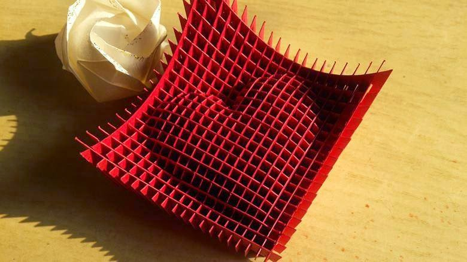

Cadou - INIMA - handmade
Kirigami
Kirigami este arta de a tăia şi îndoi hârtia. Ea se practica cu multe secole în urmă în China şi Japonia. În China tăierea hârtiei este o artă tradiţională, populară, cu o istorie lungă şi un stil unic. Mult timp tăierea hârtiei a fost rezervată femeilor din înalta societate, fiind considerată hobby aristocratic. Mai târziu, pe măsură ce hârtia începe să fie folosită de tot mai mulţi oameni, tăierea ei devine un meşteşug practicat şi de bărbaţi. Una dintre dificultăţi este că modelul trebuie să rămână intact, să nu se facă nici o tăietură greşită, deoarece fiecare parte a ilustraţiei comunică cu alta. În această îmbinare a părţilor se concentrează, de fapt, toată arta şi frumuseţea kirigami.
INIMA - handmade
Un cadou perfect, realizat manual, cu multa dragoste, poate fi o inima handmade. Inima noastra este absolut frumoasa si unica pentru o zi speciala. Lucrarea in kirigami poate fi realizata din diferite folii si culori, cu anumite sensuri. Aceasta arta frumoasa e plina de simboluri si semnificatii, dar arata si foarte tare! Efectul 3D neobișnuit al imbinarii hârtiei creează o piesă de artă minunată, de care te poti bucura o perioada indelungata. De multe ori un cadou făcut cu propriile mâini este apreciat mult mai mult în greutate decât cel mai scump, care este cumpărat pentru bani. Utilizind schemele kirigami prezentate va-ti fi capabili de a crea o mare capodoperă de hârtie și de a folosi ca un cadou pentru cei dragi. Schema acestei inimi superbe este diponibila doar pentru utilizatorii abonati.
Pentru a accesa schema INIMII ABONEAZA-TE!
